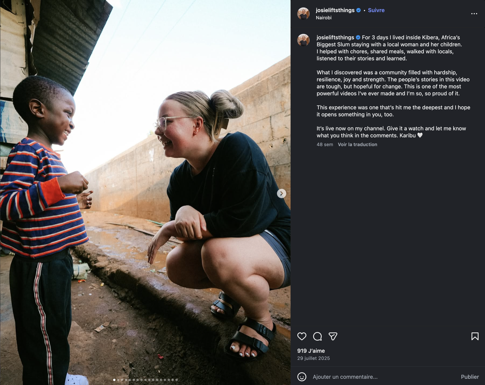
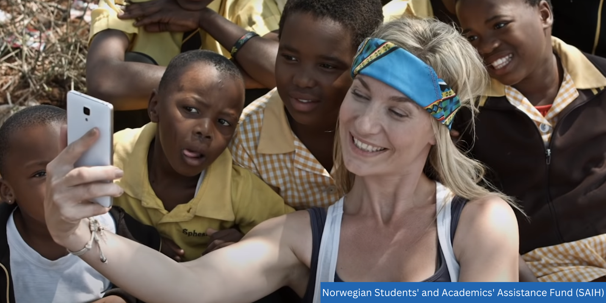
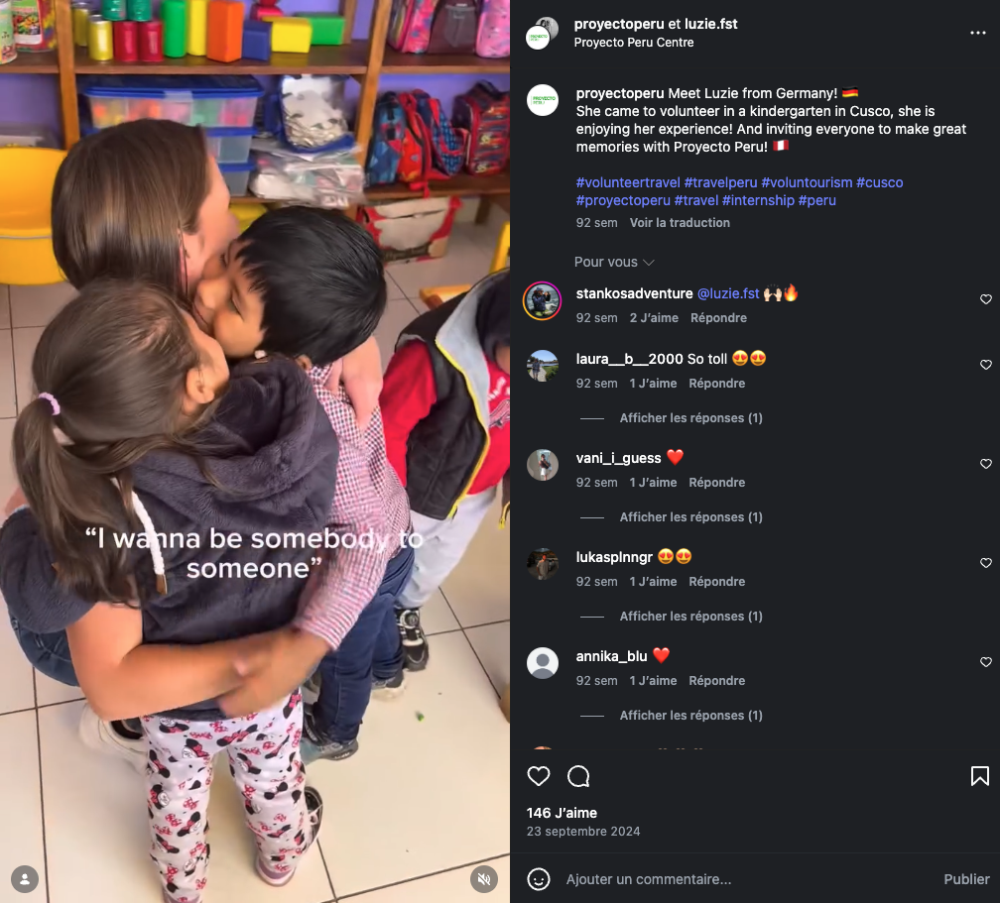
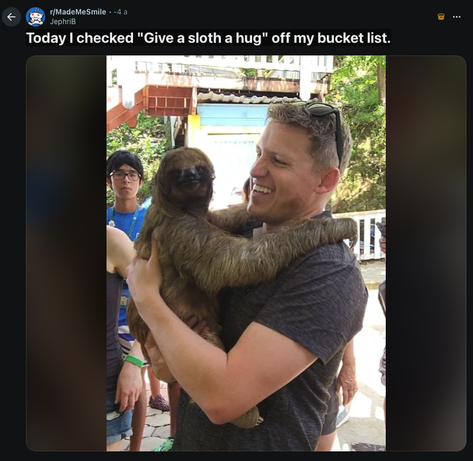

Histoire, éthique, rapports de pouvoir et néocolonialisme
Colonialisme · aide internationale · sauveur blanc · volontourisme
Sommaire
01
Du colonialisme au néocolonialisme
Conférence de Berlin, indépendances, définition de Nkrumah · et trois penseurs décoloniaux : Fanon, Mignolo, Mbembe
→
02
L'aide internationale
Quand les bonnes intentions ne suffisent pas · vêtements au Ghana, moustiquaires, orphelinats, Haïti post-séisme
→
03
Le sauveur blanc
De Jules Ferry aux selfies humanitaires Instagram · mécanismes psychologiques (Teju Cole) et poverty porn
→
04
Le volontourisme
Distinguer un engagement éthique d'un tourisme humanitaire · comprendre le modèle économique
→
01
Partie 01
Du colonialisme au néocolonialisme
Conférence de Berlin · Indépendances · Nkrumah · Pensée décoloniale
Brise-glace · Tour de table
« Pourquoi je veux partir ? Qu'est-ce que j'espère apporter ? »
Noter les réponses mot pour mot · pas de jugement à ce stade.
On y revient en clôture pour mesurer ce qui a bougé.
Note formateur : Tour de table. Toutes les motivations sont valides ici · les biais se déconstruisent ensuite.
01 · Histoire
Du colonialisme au néocolonialisme
Même domination · formes qui changent
1884–85
1960s
Aujourd'hui
Pérou
Berlin Partage colonial
Indépendances Souveraineté formelle
Néocolonialisme Même extraction
Fil rouge Las Bambas
1 · COLONISATION
Conférence de Berlin
Partage de l'Afrique sans aucun représentant africain. Frontières tracées à la règle · encore actives aujourd'hui. Travail forcé, extraction, destruction des structures politiques locales.
Acte général de Berlin, 1885
2 · DÉCOLONISATION
Indépendances politiques
Drapeaux et sièges à l'ONU · mais économies extractives, dettes coloniales (Haïti rembourse jusqu'en 1947), élites formées au Nord. Souveraineté formelle ≠ autonomie économique.
3 · CONTINUITÉ
Néocolonialisme
PAS du FMI, dette, accords commerciaux inégaux, land grabbing, soft power. Pas de soldats · même extraction de richesses et hiérarchie culturelle.
4 · ANCRAGE
Fil rouge local · Pérou
1533 conquête · Potosí · indépendance 1821 sans rupture des structures · réforme agraire 1969 · Las Bambas : cuivre, pollution, protestations quechua.
Conflits miniers · Las Bambas
01 · Néocolonialisme
Définir le néocolonialisme
« L'essence du néocolonialisme, c'est que l'État qui y est soumis est, en théorie, indépendant. En pratique, son système économique, et donc sa politique, est dirigé de l'extérieur. »
Kwame Nkrumah · Neo-Colonialism, 1965 · président du Ghana, renversé en 1966
1 · INSTITUTIONS
Conditionnalités FMI / Banque mondiale
Plans d'ajustement structurel (années 1980–90) : privatisations, austérité, ouverture des marchés · effondrements documentés des services publics.
Critiques des PAS
2 · DETTE
La dette comme instrument de contrôle
Service de la dette souvent supérieur aux budgets santé + éducation. Dettes « odieuses » contractées par des dictatures soutenues par le Nord.
3 · MONNAIE
Franc CFA · monnaies de dépendance
Réserves au Trésor français, droit de regard monétaire · indépendance politique limitée par la contrainte monétaire.
4 · PÉROU
Ancrage local
Fujishock (1990) : prix multipliés du jour au lendemain. Aujourd'hui : 2ᵉ producteur mondial de cuivre · bénéfices offshore, pollution locale (Las Bambas).
Extraction minière & communautés
01 · Pensée décoloniale
Trois voix fondatrices
1961
2000
2013
Fanon Libération mentale
Mignolo Colonialité
Mbembe Regard fabriqué
Frantz Fanon
Les Damnés de la Terre, 1961 · psychiatre martiniquais, FLN
« La décolonisation est toujours un phénomène violent. »
La colonisation déshumanise aussi psychologiquement : le colonisé intériorise le regard du colonisateur. La libération doit être politique et mentale.
Pour AKUU · arriver avec « nos solutions » peut reproduire cette hiérarchie.
Walter Mignolo
Local Histories / Global Designs, 2000
« La modernité est indissociable de la colonialité. »
Progrès, développement, rationalité « universelle » ont été construits avec la colonisation. Penser depuis les marges (pensée frontalière), pas seulement depuis le centre.
Pour AKUU · « développer » Puerto Miguel avec un cadre occidental ignore le buen vivir andin.
Achille Mbembe
Critique de la raison nègre, 2013
« Le monde noir n'existe que dans le regard qui le fabrique. »
La « race » est une construction politique pour justifier exploitation, puis colonisation, puis aide. L'Autre change de costume, pas de place dans le récit.
Pour AKUU · vois-tu des sujets autonomes ou des objets de compassion ?
01 · Aide
L'aide internationale en chiffres
223,7 Md$
APD mondiale 2023 · record historique
Mais seulement 0,37 % du RNB des donateurs · objectif ONU depuis 1970 : 0,7 %
Ce que le chiffre cache
· Aide « liée » (achats dans le pays donateur) · Coûts d'accueil de réfugiés comptés en APD · Consultants et entreprises du Nord
OCDE · aide liée
Flux inverses
Flux financiers illicites sortant d'Afrique (évasion, fausse facturation) : souvent supérieurs à l'APD reçue. L'Afrique est créancière nette du reste du monde.
Global Financial Integrity
Donateurs principaux = aussi grandes puissances géopolitiques. Les mêmes régions restent « récipiendaires » depuis 60 ans · l'aide résout-elle ou maintient-elle ?
01 · Cadre
Trois approches, trois logiques
Cliquez sur une vignette · qui décide, qui finance, quel risque
Solidarité internationale
Qui décide · la communauté locale (besoins, priorités, solutions)
Relation · horizontale · partenaires, pas « bénéficiaires »
Horizon · autonomisation · ne plus avoir besoin de l'extérieur
Modèle visé par AKUU · Casa, musée, comité villageois
Aide au développement
Qui décide · bailleurs (États, Banque mondiale, AFD, USAID)
Bilan · succès (variole, mortalité infantile) et échecs / dépendance
Risque · structures qui s'effondrent quand le financement s'arrête
Humanitaire d'urgence
Qui décide · ONG internationales en crise (séisme, guerre, famine)
Légitime · sauver des vies sans attendre · MSF, HCR, PAM
Limite · ne traite pas les causes · peut devenir permanent ou alibi politique
≠ le cadre d'une mission de solidarité longue durée
Note formateur : Demander aux participants : où se situe AKUU · et quand glisse-t-on vers l'aide classique ?
01Vidéo
« DÉCODEUR MINUTE : Le décolonialisme »
« Dans cette définition, où situez-vous le travail d'AKUU ? »
Note formateur : Lancer la vidéo en plein écran, puis revenir pour la question.
02
Partie 02
L'aide internationale
Données macro · Cas d'étude · Lectures · Débat structuré
02 · Données
Aide et pauvreté · un paradoxe à débattre
AFRIQUE SUBSAHARIENNE · MOYO
11 %
pauvreté 1970
→
66 %
pauvreté 1998
Malgré des centaines de milliards d'aide. Mécanismes avancés : rente / corruption · destruction d'incitations locales · dépendance budgétaire.
Dambisa Moyo · Dead Aid, 2009
NUANCES ESSENTIELLES
Corrélation ≠ causalité · guerres, VIH, sécheresses, prix des matières, PAS du FMI.
Sachs · le problème serait le manque d'aide, pas l'aide.
Banerjee & Duflo (Nobel 2019) · certaines aides ciblées et évaluées (RCT) fonctionnent très bien.
Poor Economics, 2011
Jeffrey Sachs · The End of Poverty
Objectif pédagogique · sortir du binaire « aide = bien / aide = mal ».
02 · Cas d'étude
Quand les bonnes intentions font mal
CAS 1 · GHANA · VÊTEMENTS
15 M / semaine
Containers de fripes à Accra (Kantamanto). 5–10 % redistribués localement · le reste devient marché privé ou décharge. Textile local étouffé · plages polluées.
Leçon · un « don » peut détruire une filière.
Or Foundation / Kantamanto · UNEP textile
CAS 2 · MOUSTIQUAIRES
Gratuit ≠ inutile
Détournements documentés (filets → pêche, robes). Mais les RCT montrent aussi que les moustiquaires gratuites sont souvent mieux utilisées que les payantes.
Leçon · suivre l'usage réel · ne pas conclure « gratuit = mal ».
Banerjee & Duflo · WHO ITN
OMS · moustiquaires imprégnées
CAS 3 · ORPHELINATS
≈ 80 %
des enfants en orphelinat ont encore au moins un parent. L'industrie du volontourisme crée une demande d'orphelins · ruptures d'attachement à chaque vague de bénévoles.
Leçon · pas de court séjour avec des enfants · jamais.
UNICEF · Better Care Network
CAS 4 · HAÏTI 2010
≈ 13 Md$
Milliers d'ONG (« Republic of NGOs »). Une fraction infime de l'aide US versée au gouvernement haïtien. Routes, santé, pauvreté : bilan accablant 10 ans après.
Fast fashion : nos vieux habits polluent les plages du Ghana
Note formateur : Après la vidéo, relier au cas des vêtements de la slide précédente.
02Vidéo
The Danger of a Single Story
Note formateur : TED Talk de Chimamanda Ngozi Adichie. Après la vidéo : quelles 'histoires uniques' portez-vous sur le Pérou ?
02 · Lectures
Lectures recommandées · Partie 2
ACCESSIBLEDead Aid · L'Aide fatale
Dambisa Moyo, 2009 · ex-Banque mondiale / Goldman Sachs
Argument · l'aide gouvernementale systémique crée rente, corruption et dépendance. Limite · sous-estime les aides ciblées qui marchent (RCT). Pour la mission · sortir du réflexe « donner = bien ».
INTERMÉDIAIREPeaceland
Séverine Autesserre, 2014 · Columbia
Argument · la bulle quotidienne des expatriés (4×4, per diem) crée une déconnexion fatale. Limite · focus paix / Congo · transferable à l'aide. Pour la mission · écouter le savoir local avant les procédures HQ.
AVANCÉPoor Economics
Banerjee & Duflo, 2011 · Nobel 2019
Argument · tester, mesurer, ajuster (RCT) · certaines aides marchent très bien. Limite · technocratique · peu de critique géopolitique. Pour la mission · nuance face à Moyo · évaluer l'impact réel.
Débat structuré
L'aide internationale : nécessaire ou contre-productive ?
ÉQUIPE A
« L'aide internationale est nécessaire et fonctionne »
ÉQUIPE B
« L'aide internationale est structurellement contre-productive »
Appuyez-vous sur les données, auteurs et cas vus dans cette partie.
« The White Savior Industrial Complex is not about justice. It is about having a big emotional experience that validates privilege. »
Teju Cole · The Atlantic, 2012 · réaction à Kony 2012
MÉCANISME 1
Sentimentalité
Pleurer + donner 10 € remplace l'action politique (commerce, dette, fiscalité). La charité individuelle permet de se sentir bien sans rien changer structurellement.
Pour AKUU · l'émotion du départ est légitime · elle ne remplace pas le travail politique (fiscalité, extractivisme, récits médiatiques).
MÉCANISME 2
Protagoniste blanc
Le récit raconte la transformation du sauveur · les « aidés » sont des figurants. « Ce voyage a changé MA vie » est la phrase révélatrice.
Test · dans ton récit de mission, qui est le sujet principal · toi, ou les personnes de Puerto Miguel ?
MÉCANISME 3
Dépolitisation
Problèmes politiques transformés en problèmes humanitaires · responsabilité collective effacée, remplacée par la générosité individuelle.
Exemple · pollution minière = crise humanitaire « à soigner » plutôt que rapport de force à documenter.
MÉCANISME 4
Validation du privilège
« Nous pouvons aider / ils doivent être aidés » présenté comme naturel. L'asymétrie n'est pas questionnée.
Posture · arriver comme apprenant · compétences utiles sur demande locale · pas comme sauveur.
À croiser · Binyavanga Wainaina · How to Write About Africa, 2005
03 · Images
Le paradoxe des images
+ dons
Les images de souffrance lèvent plus de fonds à court terme · les ONG éthiques sont pénalisées financièrement.
− autonomie
Les mêmes images réduisent la perception d'agency des populations · stéréotypes et paternalisme renforcés.
Cadre théorique · Lissner 1977 (poverty porn) · Chouliaraki (spectateur ironique) · campagnes Radi-Aid / No White Saviors comme contre-modèles.
Jørgen Lissner, 1977
Lilie Chouliaraki · The Ironic Spectator, 2013
03Vidéo
Détournements de fonds, fausses bonnes actions : le white saviorism
Note formateur : Après la vidéo, demander : « Avez-vous déjà vu ce type de comportement ? »
03 · Poverty porn
Le « Poverty Porn »
Définition (Lissner, 1977)
Images déshumanisantes de la pauvreté pour susciter pitié / dons. Comme la pornographie : émotion immédiate, réflexion absente, personnes réduites à des objets visuels.
Merchants of Misery · New Internationalist
Critères opérationnels
· Enfant isolé / regard implorant · Plongée (haut → bas) · Misère sans contexte ni nom · Appel au don centré sur le spectateur
Poverty porn 2.0 · IA
Images de pauvreté générées par IA pour maximiser likes et dons frauduleux · plus besoin de sujets réels. Les stéréotypes sont assez ancrés pour que le faux passe pour du reportage.
03 · Photo terrain
Avant de photographier sur le terrain
QUESTION 1
Consentement éclairé
Où sera publiée l'image · pour quel usage · qui la verra. Un sourire n'est pas un oui. Enfants = accord des parents. Respecter les tabous locaux liés à l'image.
Terrain · expliquer l'usage en espagnol (ou via un traducteur local) avant de déclencher.
QUESTION 2
Dignité
Sujet actif ou objet de pitié ? Angle à hauteur d'yeux · nom · contexte · compétences visibles. Pas de cadrage en plongée condescendant.
Test · la personne se reconnaîtrait-elle fièrement sur cette image ?
QUESTION 3
Test « mon enfant »
Publierais-je cette photo si c'était ma famille ? La distance géographique ne change pas les standards éthiques.
Si la réponse est non pour ton entourage · c'est non pour Puerto Miguel.
QUESTION 4
Qui bénéficie ?
Communauté (doc projet, partenaires) ou moi (likes, CV) ? Si c'est pour soi · ne pas publier.
La com' AKUU sert le projet · pas le personal branding du bénévole.
QUESTION 5
Droits & conservation
Qui garde les fichiers · peut-on retirer l'image · validation locale avant publication. Vers une charte photo AKUU.
Doute = non · même règle que pour la posture générale.
Activité collective
Tri de photos
Le formateur projette 8 images de communication humanitaire. Les participants classent chaque image sur un axe :
ÉthiqueProblématique
Note formateur : Préparer 8 images à l'avance (campagnes ONG, posts Instagram, publicités). Débat après chaque image.
Disclaimer
Les images utilisées dans cette activité ont été prélevées sur des comptes Instagram publics, sans demander l'avis aux personnes concernées.
Elles sont utilisées dans un cadre strictement pédagogique. Si une personne concernée supprime publiquement son image, nous en ferons de même.
03 · Tri de photos
Post Kibera

· La bénévole est physiquement au-dessus de l'enfant · mise en image du rapport de pouvoir
· Récit centré sur elle : « I lived », « I discovered », « I'm so proud »
· 3 jours pour « découvrir » ce que les gens vivent toute leur vie
· « Africa's Biggest Slum » · Kibera réduit à un label de misère
03 · Tri de photos
Selfie savior

· Elle tient le téléphone · elle contrôle l'image et le récit
· Les enfants sont des accessoires · pas nommés, pas consultés
· Aucun consentement éclairé sur la publication
· Cadrage en plongée · hiérarchie visuelle renforcée
03 · Tri de photos
Proyecto Peru

· « I wanna be somebody to someone » · besoin de la bénévole d'être importante
· L'ONG utilise la bénévole comme produit marketing
· Hashtags #voluntourism · tourisme assumé
· Aucune mention de compétences pour un jardin d'enfants
03 · Tri de photos
Paresseux · bucket list

· « Bucket list » · l'animal réduit à une expérience à cocher
· Contact humain stressant pour un animal sauvage
· Même logique que le volontourisme · consommer l'exotique
Argument · une seule histoire produit stéréotypes. Pour la mission · quelles « histoires uniques » portes-tu sur le Pérou / les Kukama ?
INTERMÉDIAIREPenser dans l'urgence
Rony Brauman · ex-président MSF
Argument · humanitaire lucide, limité, professionnel · contre le spectacle. Pour la mission · distinguer urgence et solidarité longue.
AVANCÉVolunteer Tourism
Mary Mostafanezhad, 2014
Argument · solidarité transformée en expérience consommable (néolibéralisme). Pour la mission · repérer le packaging « expérience ».
ACCESSIBLEThe White Tourist's Burden
Rafia Zakaria · Al Jazeera, 2014
Argument · le voyage humanitaire satisfait d'abord les besoins émotionnels du volontaire. Pour la mission · recentrer sur qui reste et qui décide.
04 · Posture AKUU
Règle bénévole · posture
01 · INTERDITS
Ce qu'on ne fait pas
Photos d'enfants isolés · cadrages « avant / après misère → sauvetage » · phrases du type « je leur apporte », « je change leur vie » · se placer au centre d'une image à Puerto Miguel pour Instagram ou LinkedIn.
Réflexe · si la photo sert ton image plus que le projet local, ne la prends pas.
02 · CONSENTEMENT
Ce qu'on demande
Consentement explicite : usage (site, réseaux, rapport), supports, durée. Droit de refuser sans justification. Pour l'école / le musée : accord des parents et de l'équipe locale. Un sourire n'est pas un oui.
Terrain · expliquer en espagnol (ou via un traducteur local) où l'image ira, avant de déclencher.
03 · IMPACT
Ce qu'on vérifie
Qui a défini le besoin (assemblée, comité musée, enseignants) · qui décide au quotidien · qui reste après ton départ · à qui profite la communication. Si la réponse est « surtout toi », pause.
Test · le projet continue-t-il sans bénévoles occidentaux ? Sinon, c'est un décor, pas une mission.
04 · GARDE-FOU
En cas de doute = non
Photo, mot, geste, post · si tu hésites, n'agis pas. La prudence est une compétence de mission, pas une timidité. Tu peux toujours demander conseil à l'équipe locale ou au référent AKUU avant d'agir.
Règle d'or · mieux vaut manquer une « belle » photo que blesser une relation de confiance.
Module 5 · Clôture
« Qu'est-ce qui a changé dans votre réponse initiale ? »
Néocolonialisme · indépendance de façade (Nkrumah)